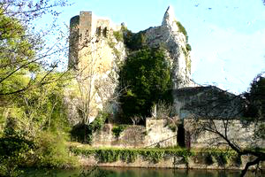
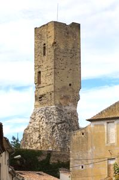
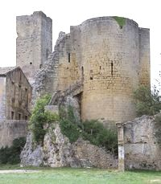
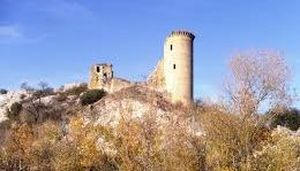
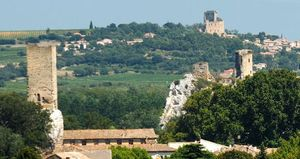
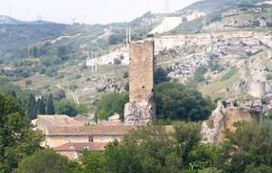
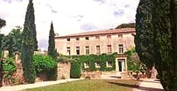
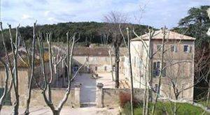

Recensement Jean-Claude Truffet
| Département | 30 — Gard |
| Canton | Roquemaure |
| Commune | Roquemaure |
| Type d'édifice | Château-Vestiges |
| Période d'origine | XII-XVII |








Trois châteaux à Roquemaure dont Roquemaure, château de Truel du XIIe siècle et de Clary du XVIIIe siècle. ROQUEMAURE, fief de comte de Toulouse qui le passa au pape Innocent III lors de la soumission, passa à la couronne de France, ville royale, au château un gouverneur avec une importante garnison, au XIVe et XVe siècles, un pape, des rois et des ducs de France sinstallent au château. Le pape Clément V y meurt en 1314. Le duc dAnjou, lieutenant du roi en Languedoc, y fait des séjours répétés de 1367 à 1380 accompagné de son épouse, la duchesse Marie de Blois. En 1376, il y vient avec Catherine de Sienne. En 1385, le duc de Berry, lieutenant du Languedoc, convie au château une ambassade de Hongrie. Le roi Charles VI y fait étape en octobre 1389. Enfin, le dauphin Charles, futur roi Charles VII, sarrête à Roquemaure. En 1562 le château et la baronnie passe à Guillaume comte de Joyeuse, puis par alliance aux de Guise et aux Harcourt. En 1564 Charles IX accompagné de Catherine de Médicis et en 1642 Richelieu convoyant Cinq-Mars y fit halte. Louis-Philippe de Noailles propriétaire à la Révolution ne survécut pas, le château fut démantelé et vendu en 1795 en lots.
TRUEL, au sud du village château du XVIIe siècle sur un site des Templiers, il a appartenu au XVIIIe siècle au marquis de Montlaur puis à la famille d'Hugues et a maître Coupon avocat d'Avignon qui le revendit en 1993 à monsieur de Quinqueran de Beaujeu.
CLARY, en 1775 marque la naissance du domaine de Clary, propriété de Marie-Joseph-Emmanuel de Guignard, vicomte de Saint-Priest. En 1792 La vocation agricole du domaine saffirma très rapidement. Après une période de transition de la fin du XVIIIe siècle et du début du XIXe siècle, une riche famille de négociant lyonnais et darmateur marseillais, la famille Richard, va se succéder pendant 75 ans à la tête du domaine.
Roquemaure, dès le XIIe siècle, le château de Roquemaure était un des plus importants du Languedoc. Donjon et enceinte percée d'archères dans laquelle on pénètre par une porte à arc brisé ouverte dans une tour semi-circulaire, de plan rectangulaire, était protégé par sept tours dont-il reste la tour carrée dit des Carthaginois du XIIe siècle, Il ne reste aujourdhui que quelques vestiges des murs denceinte, une tour circulaire dite « Tour de la reine » et une haute tour carré appelée « la tour des princes de Soubise », mais à la fin du XVIe siècle sa détérioration est amorcée et se poursuit en trois étapes échelonnées sur deux siècles. En 1590-1591, un siège détruit sa façade méridionale; en 1671, sur ordonnance royale, lîle du château est annexée à la ville, enfin de 1795 à 1850 le château et son rocher, sont vendus à titre de bien national et utilisés comme carrière de pierre et disparais. Truel domaine clôturé de murs avec un portail sur chaque côté, le bâtiment rectangulaire à trois niveaux. Clary est représentatif de ce que pouvait être un grand domaine agricole au XIXe siècle, le domaine, malgré des remaniements fonciers sensibles, a gardé une intégrité avec une surface denviron 200 ha, sur laquelle on peut voir encore toutes les empreintes de son évolution depuis le XVIIIe siècle. La partie bâtie affiche un potentiel architectural de la fin du XVIIIe siècle. Lampleur des dépendances, les traces de nombreuses activités représentent un potentiel ethnique important. Les abords, marqués par linfluence paysagère du XIXe siècle, diffusent une délicieuse ambiance romantique. Néanmoins, larchitecture des abords reste à redécouvrir: le système dalimentation de la cascade de rocaille, les circulations enfouies sous la végétation, le bosquet de cèdres au Sud de la partie bâtie, ajouteront sans doute à lintérêt paysager déjà avéré du site.
Guillaume comte de Joyeuse Famille d'Hugues Famille Richard
"
Vestiges du château fort de Roquemaure, château de Clery et de Truel